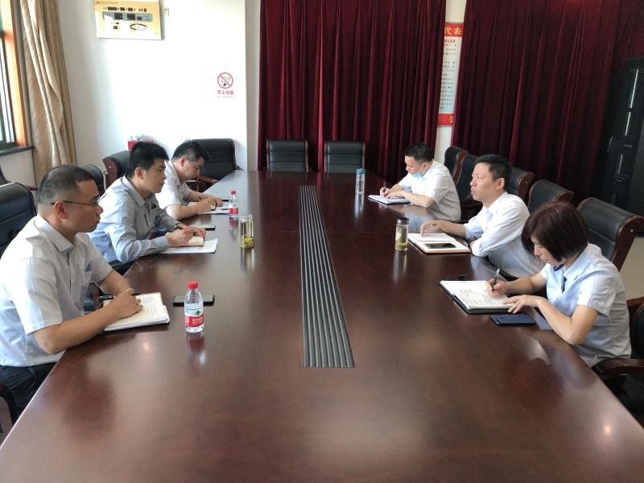
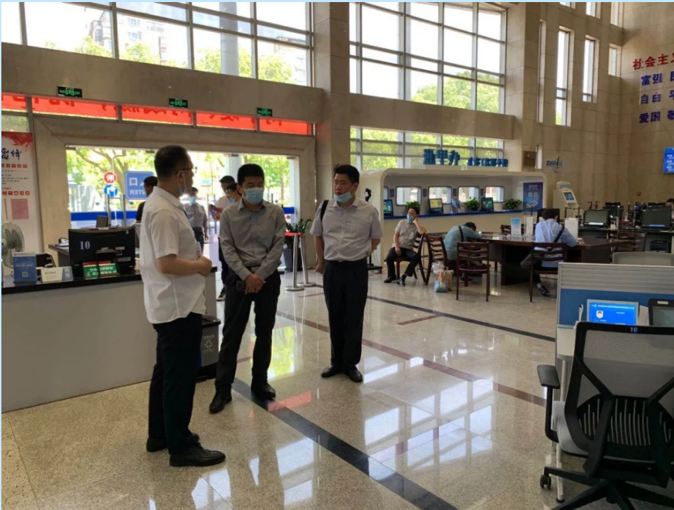
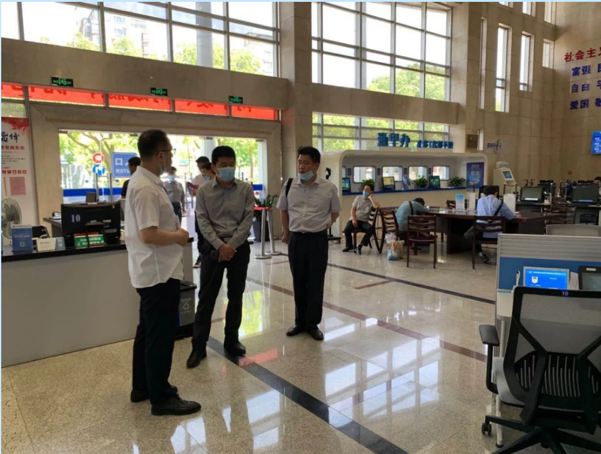

吴江公共资源交易中心积极探索长三角一体化合作机制
【信息发布时间：2020-05-21阅读次数：】 【我要打印】 【关闭】


学习调研组首先参观了嘉善县公共资源交易场地建设及相关设施。
座谈会上，嘉善县政务服务和数据资源管理办公室副主任施正明介绍了嘉善县公共资源交易的主要职责，部门人员设置以及总体运行情况。
双方就建设工程和政府采购的电子化交易流程、评标专家管理规定以及投标保证金管理等方面进行了详细的交流。
根据各级部门的文件精神，最终明确以评标专家资源共享和异地评标为初步的跨区域合作方向，逐步推进公共资源交易领域的长三角一体化合作管理机制。
 

通过此次研究公共资源交易跨区域合作领域的创新举措，苏州市公共资源交易中心吴江分中心将秉承务实审慎、有序创新的原则，力促使我区公共资源交易更加便民高效、公平公正的运行。